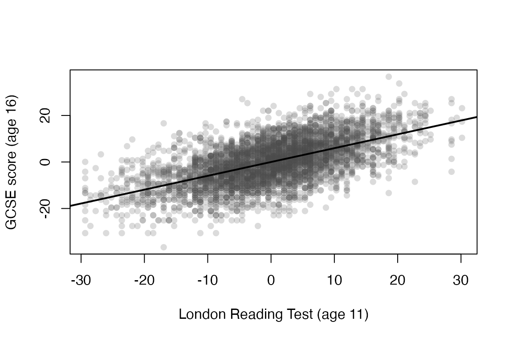

Install
# install.packages("remotes")
remotes::install_github("joonho112/regdatasets")
# A fixed release keeps every number in a course stable:
remotes::install_github("joonho112/regdatasets@v1.0.0")Find a dataset
list_datasets() lists every dataset with its size and
the regression topics it suits:
library(regdatasets)
datasets <- list_datasets()
datasets[, c("dataset", "rows", "cols", "topics")]
#> # A tibble: 22 × 4
#> dataset rows cols topics
#> <chr> <int> <int> <chr>
#> 1 alcohol1_pp 246 9 multilevel-longitudinal
#> 2 berk_sub 1169 3 logistic
#> 3 berkeley 3593 3 logistic
#> 4 classdata_07 44 12 simple-regression
#> 5 crime 67 5 continuous-predictors, nonlinear
#> 6 disc 2000 15 logistic, ordinal
#> 7 disc2 2000 15 logistic, ordinal
#> 8 faculty 514 10 interactions, continuous-predictors
#> 9 gcse 4059 5 simple-regression, ancova, interactions, nonlinear,…
#> 10 grades 198 8 ordinal, glm-latent
#> 11 gss_1 2832 16 logistic
#> 12 hsb_sub 188 7 interactions, model-building, diagnostics, multilev…
#> 13 hsbs1 350 16 diagnostics, model-building
#> 14 individuals 55899 6 interactions, anova
#> 15 instruction 1190 12 anova, simple-regression, multilevel-longitudinal
#> 16 nels_data 2000 299 model-building, diagnostics
#> 17 penalty 674 3 logistic, diagnostics
#> 18 pisa2000 4528 15 anova, interactions, simple-regression, logistic
#> 19 reading 66 8 anova, ancova
#> 20 satisfaction 110 3 ordinal
#> 21 titanic 1309 6 logistic, glm-latent
#> 22 womenlf 263 5 ordinal, logisticFilter by topic to find data for a particular method:
list_datasets(topic = "ordinal")[, c("dataset", "title")]
#> # A tibble: 5 × 2
#> dataset title
#> <chr> <chr>
#> 1 disc School discipline: NELS:88 original items
#> 2 disc2 School discipline: NELS:88 with SES and test scores
#> 3 grades Essay grades and text features
#> 4 satisfaction Job satisfaction by income and gender
#> 5 womenlf Canadian women's labour-force participationUnderstand the variables
Every dataset has a help page, for example ?gcse. The
variable table on that page is also available as a data frame through
codebook(), which hides empty columns when printed so value
meanings stay readable. For wide datasets, filter by label
or group, or inspect interactively with
View(codebook("nels_data")):
codebook("gcse")[, c("variable", "label", "values", "units")]
#> # A tibble: 5 × 4
#> variable label values units
#> <chr> <chr> <chr> <chr>
#> 1 school School ID NA NA
#> 2 student Student ID within school NA NA
#> 3 gcse GCSE exam score at age 16 NA normalized sco…
#> 4 lrt London Reading Test score at age 11 NA standardized s…
#> 5 gender Girl 0 = boy; 1 = girl NA
cb <- codebook("nels_data")
nrow(cb)
#> [1] 299
cb[
grepl("locus of control", cb$label, ignore.case = TRUE),
c("variable", "label", "group")
]
#> # A tibble: 4 × 3
#> variable label group
#> <chr> <chr> <chr>
#> 1 bylocus1 Locus of control 1 Base year: composites
#> 2 bylocus2 Locus of control 2 Base year: composites
#> 3 f1locus1 Locus of control 1 First follow-up: composites and status
#> 4 f1locus2 Locus of control 2 First follow-up: composites and statusUse the data
The datasets are loaded on first use; no data() call is
needed. They are plain tibbles without attached Stata labels: most
variables are numeric (integer or double),
seven datasets include character columns (such as
titanic$embarked or reading$group), and
disc$race / disc2$race are factors. Value
meanings are always documented in codebook() and the help
page.
head(gcse)
#> # A tibble: 6 × 5
#> school student gcse lrt gender
#> <int> <int> <dbl> <dbl> <int>
#> 1 1 143 2.61 6.19 1
#> 2 1 145 1.34 2.06 1
#> 3 1 142 -17.2 -13.6 0
#> 4 1 141 9.68 2.06 1
#> 5 1 138 5.44 3.71 1
#> 6 1 155 17.3 21.9 0Categorical variables and factor()
Because multi-level survey codes are kept as integers (for example
titanic$pclass, individuals$job, or
berkeley$department), wrap them in factor()
inside model formulas so R creates dummy indicators rather than fitting
a linear trend across arbitrary code numbers. Use relevel()
to change the reference category of a factor (for example
relevel(disc$race, ref = "White")). Also check binary
codings in codebook(): most indicators are
0/1, while several survey items (such as
individuals$sex or nels_data$bys74) keep their
original 1/2 coding and must be recoded to 0/1
(for example I(bys74 == 2)) before passing them as the
outcome of glm(..., family = binomial).
First models
A first linear regression, with the reading test at age 11 predicting the exam score at age 16:
fit <- lm(gcse ~ lrt, data = gcse)
coef(summary(fit))
#> Estimate Std. Error t value Pr(>|t|)
#> (Intercept) -0.01194802 0.12642253 -0.0945086 0.9247098
#> lrt 0.59505516 0.01273006 46.7440956 0.0000000
plot(
gcse ~ lrt,
data = gcse,
pch = 16,
col = grDevices::adjustcolor("grey30", 0.2),
xlab = "London Reading Test (age 11)",
ylab = "GCSE score (age 16)"
)
abline(fit, lwd = 2)
A logistic regression of Titanic survival:
Missing values
Survey nonresponse codes such as “8 = missing” or “99.98” were
recoded to NA in version 1.0.0, so they can no longer enter
a model as if they were real values. codebook() shows, for
each variable, what was recoded: